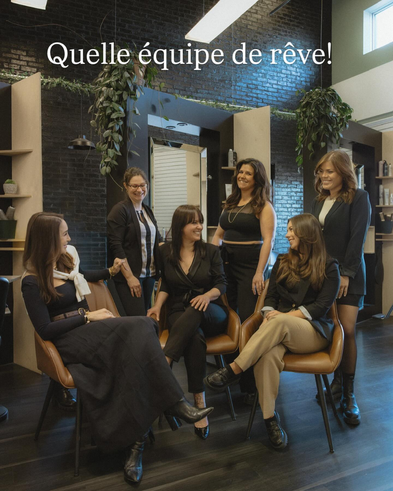
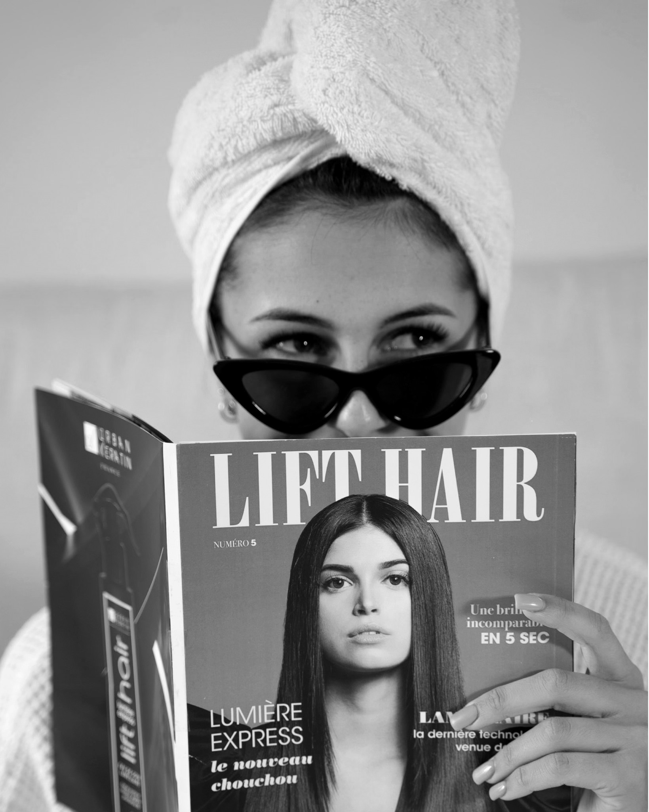
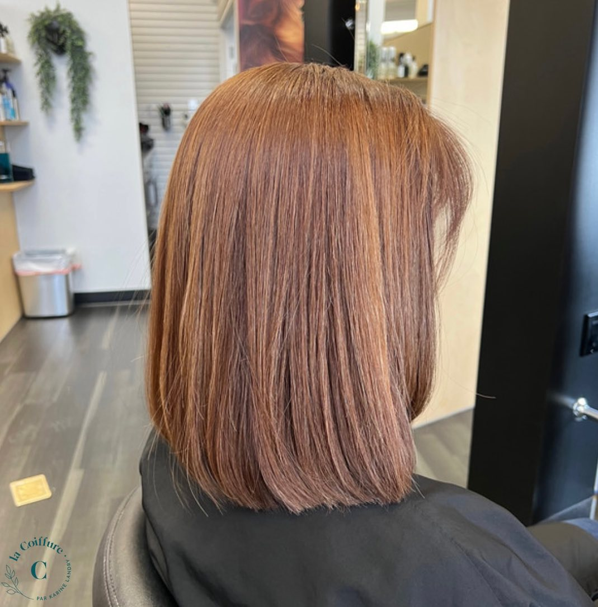
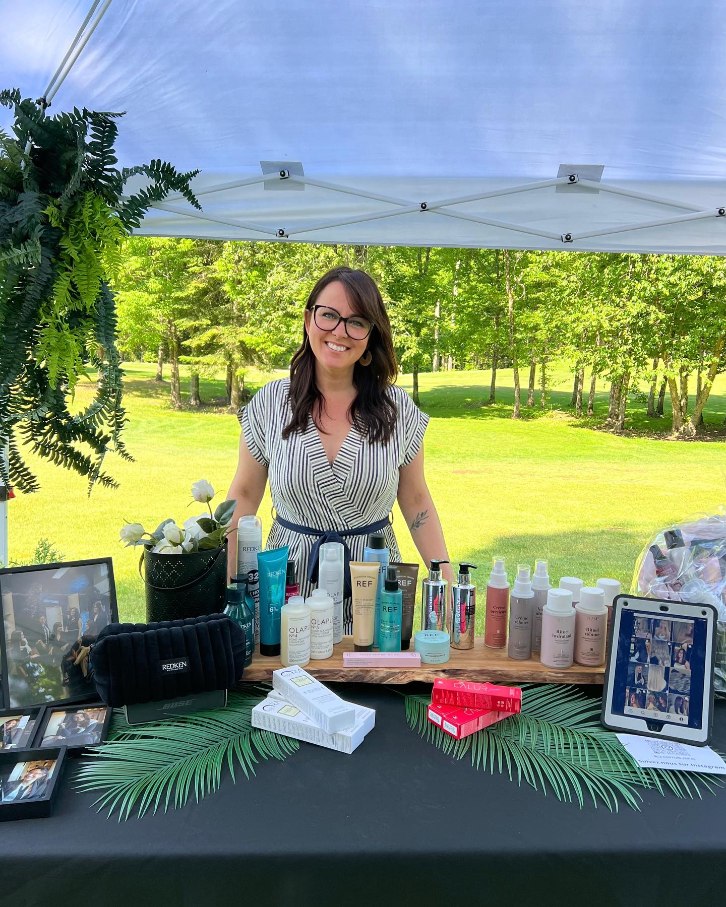
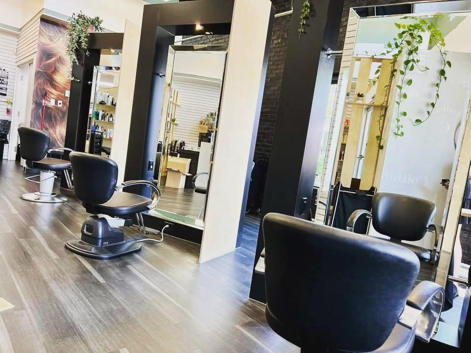
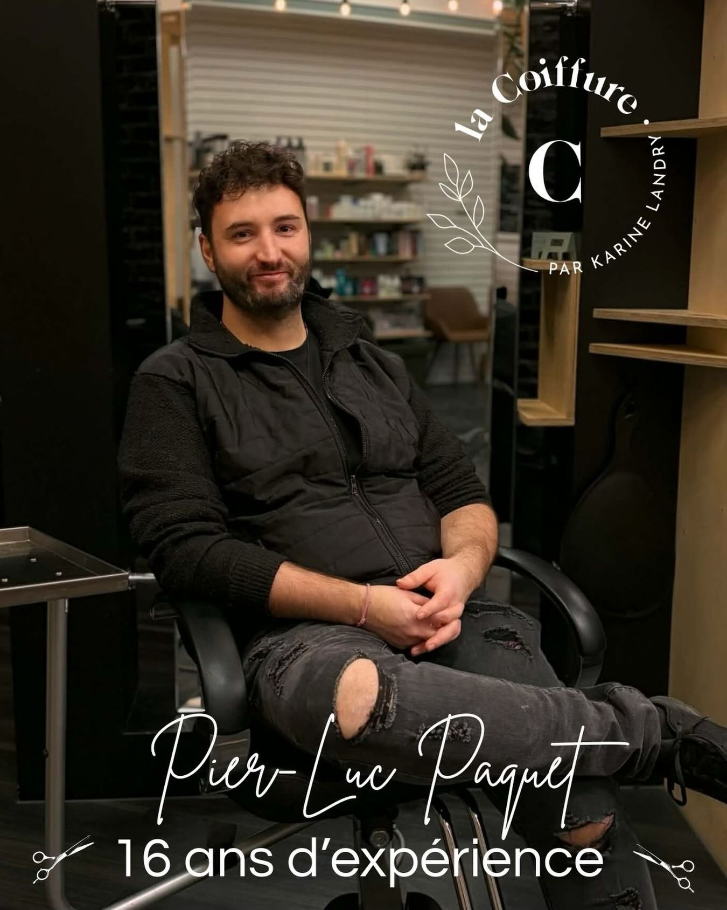
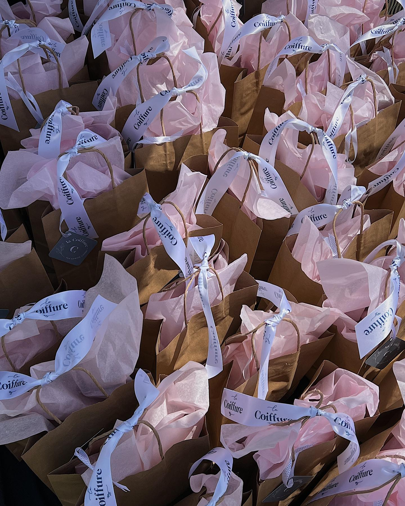
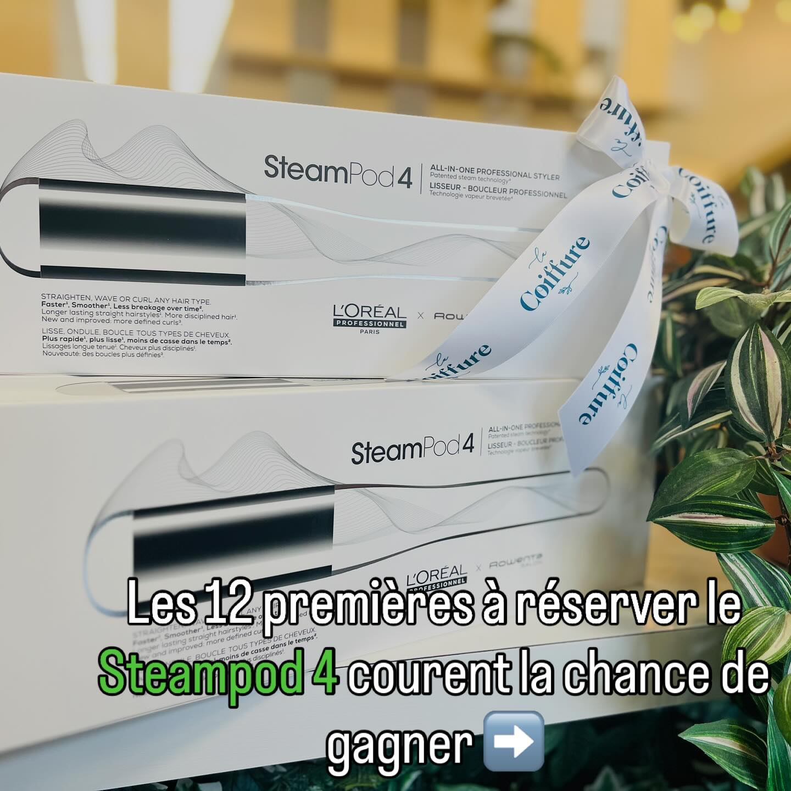
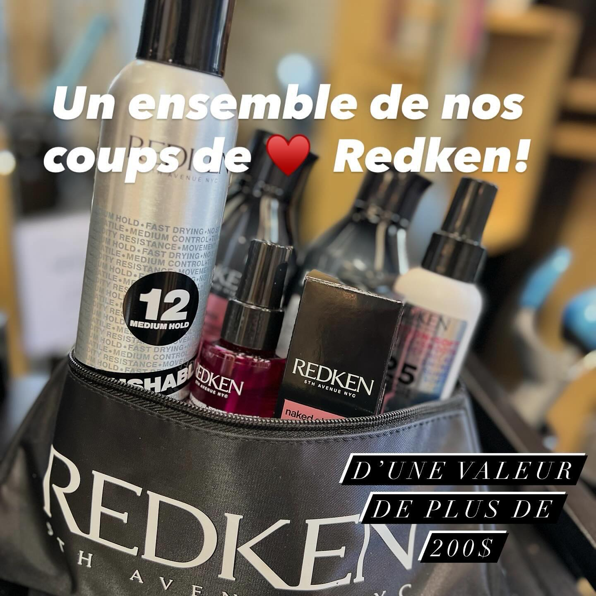
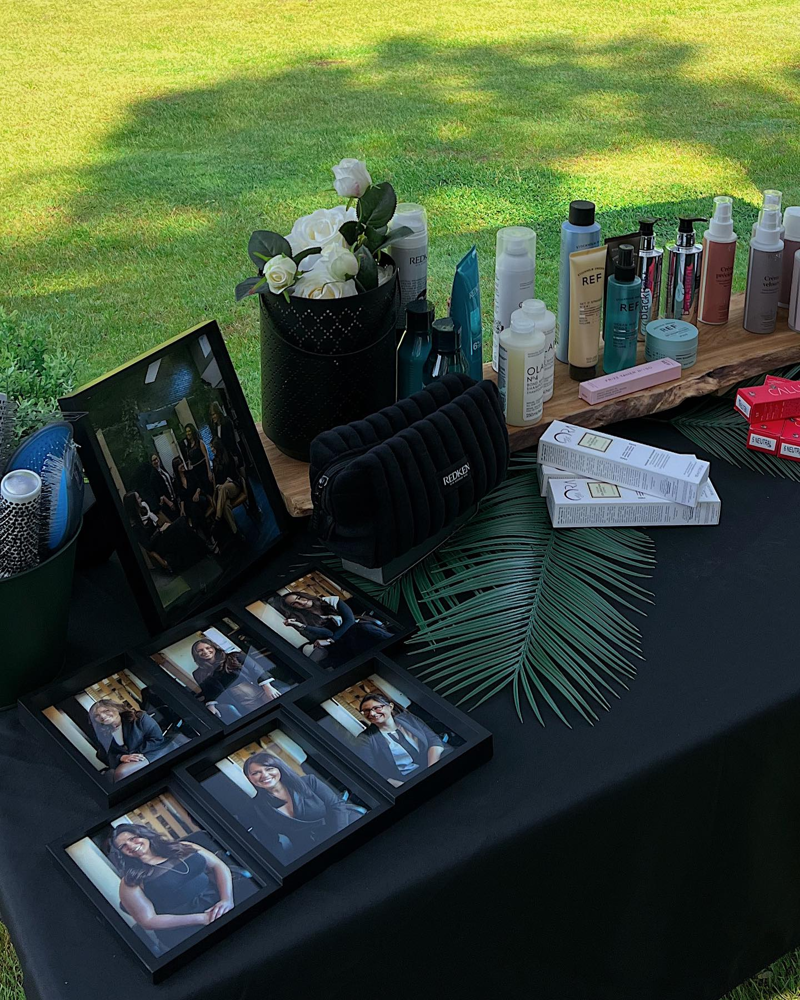

01
Coupe femme
Coupe précise avec consultation, shampoing et brushing inclus.
à partir de 55 $Salon de coiffure · Saint-Augustin-de-Desmaures · Depuis 2008
Depuis plus de quinze ans, Karine et son équipe transforment chaque visite en un moment pour soi. Coupe, couleur, balayage, lissage : l'expertise d'un grand salon, l'attention d'un rendez-vous personnel.

L'équipe · Saint-AugustinL'histoire
« Depuis 2008, dans une pure intention de prendre soin de vous. » C'est la phrase que Karine Landry a choisie pour résumer sa philosophie — et c'est exactement ce qu'on ressent en franchissant la porte du salon.
Niché au 3695 de l'Hêtrière, le salon réunit une équipe de coiffeuses et de coiffeurs d'expérience qui travaillent avec les meilleurs produits professionnels : Redken, L'Oréal Steampod 4, Olaplex et la gamme BASE. Coupe, coloration, balayage, lissage, soin profond — chaque geste est posé avec précision, dans une ambiance chaleureuse et lumineuse.
Services
Une grille transparente. Chaque service débute par un diagnostic personnalisé. Les tarifs varient selon la longueur, la densité et la technique choisie.
Coupe précise avec consultation, shampoing et brushing inclus.
à partir de 55 $Coupe et finition à la tondeuse ou aux ciseaux, selon votre style.
à partir de 35 $Une première coupe en douceur, dans une ambiance détendue.
à partir de 25 $Retouche de racines ou changement complet, formulation sur mesure.
à partir de 95 $La signature du salon. Un dégradé lumineux, naturel et durable.
à partir de 165 $Demi-tête ou tête complète pour profondeur, éclat et contraste.
à partir de 140 $Lissage anti-frisottis pour des cheveux soyeux et disciplinés des semaines durant.
à partir de 250 $Technologie L'Oréal à la vapeur, brillance et tenue impeccables.
à partir de 60 $Traitement reconstructeur professionnel, sur diagnostic.
à partir de 45 $Coiffure d'événement, attache ou mise en plis, sur rendez-vous.
à partir de 75 $Tarifs indicatifs à valider sur place. Un diagnostic personnalisé est offert à chaque visite afin de proposer le service le mieux adapté à vos cheveux et à vos objectifs.
Galerie
Quelques moments saisis au salon et lors d'événements — directement de la page Facebook @La Coiffure par Karine Landry.









Témoignages
Quelques mots de clientes, parmi des dizaines d'avis 5 étoiles sur Google et Birdeye.
« Un service exceptionnel et un accueil chaleureux à chaque visite. Karine prend le temps de bien comprendre ce qu'on veut et le résultat est toujours parfait. »
« Excellente coiffeuse, à l'écoute et très professionnelle. Le salon est lumineux, propre et on s'y sent comme à la maison. Je recommande sans hésiter. »
« Toute l'équipe est formidable. On en ressort toujours avec le sourire et une coiffure impeccable. Mon salon depuis des années ! »
Prendre rendez-vous
Un appel suffit pour réserver votre prochain rendez-vous. Vous pouvez aussi nous écrire sur Facebook ou venir nous saluer au salon.
Horaire indicatif — à confirmer avec le salon.